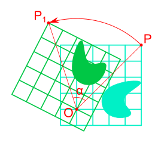
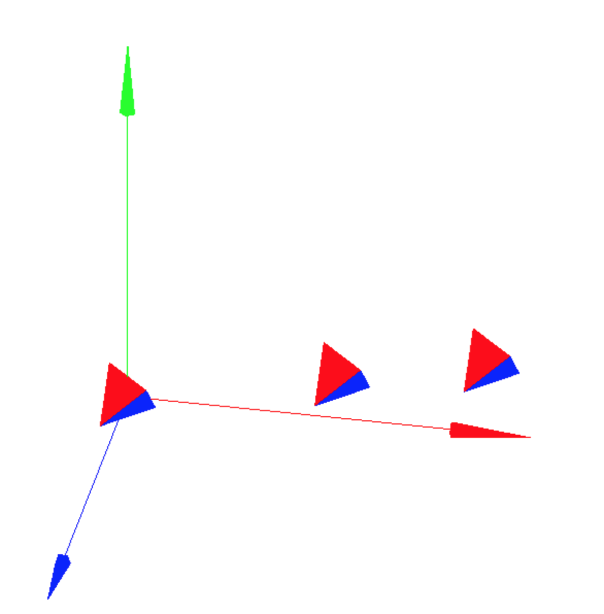
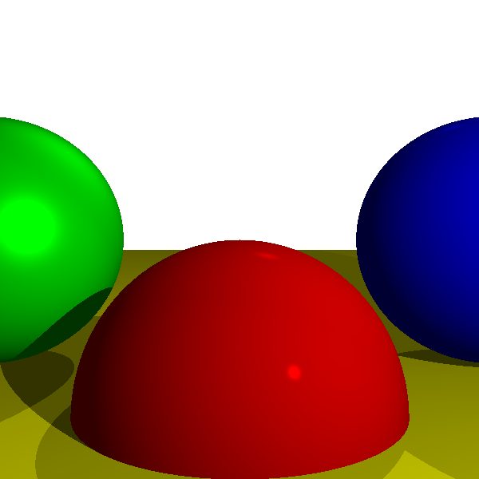
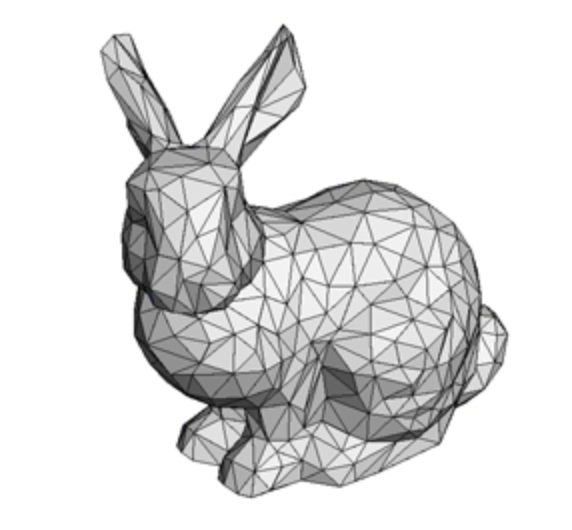

 |
Everything I know about Rotation |
 |
Implementation of paper <Affine Interpolation in a Lie Group Framework> |
 |
Notes from reading <computer-graphics-from-scratch> |
 |
Notes from reading < tinyrenderer > |